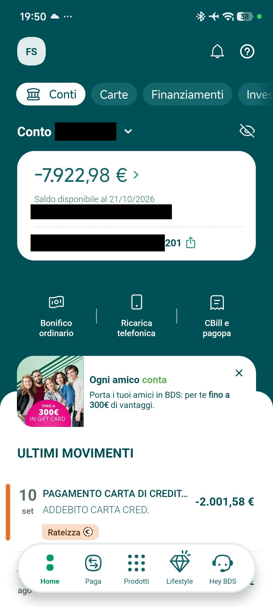
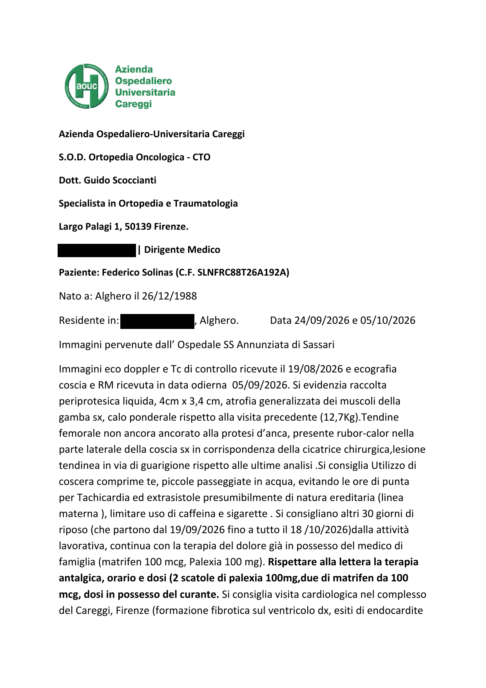
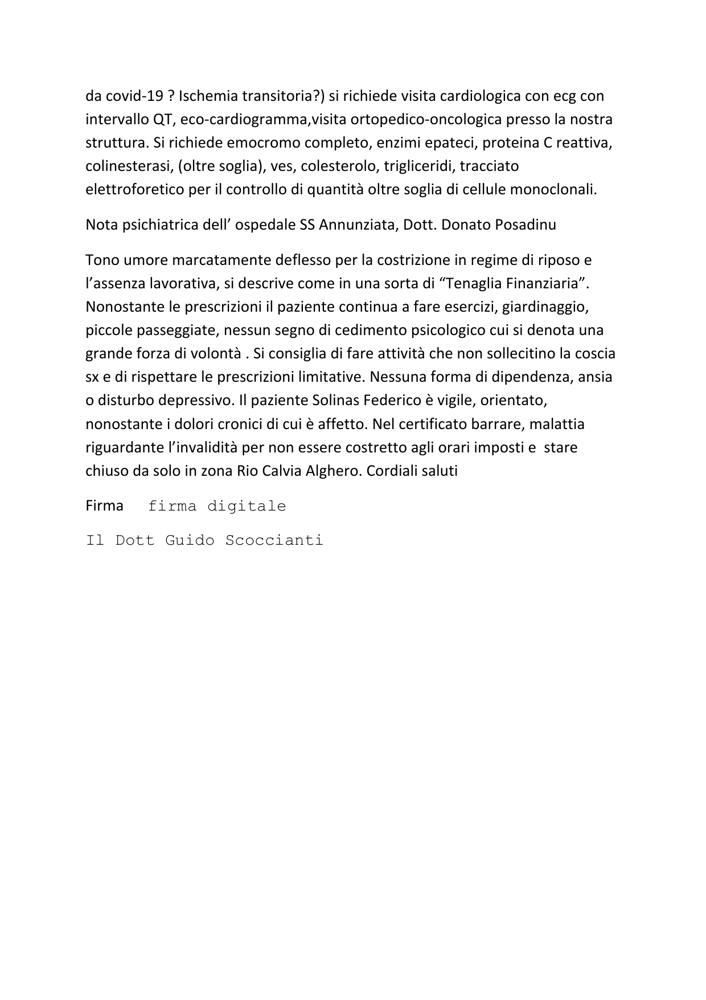
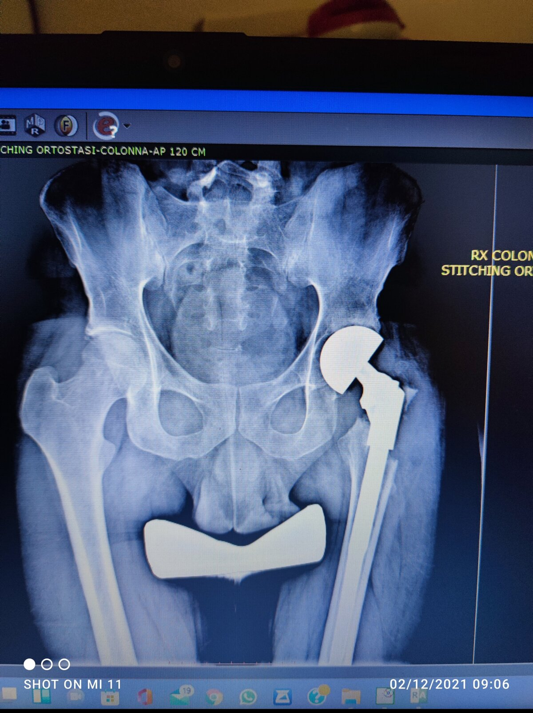

Waarom deze inzamelactie
Ik heet Federico Solinas en ben voor 80% erkend als invalide.
Ik heb alles wat ik had gegeven aan de inzamelactie voor mijn vriend Francesco, 19 jaar, die chondrosarcoom heeft, voor zijn behandelreis naar Florence. Ik deed dat samen met een paar verenigingen en zette Francesco’s gezondheid boven mijn eigen behoeften.
Nu heb ik 150 € nodig voor eten en de verzorging van mijn dieren.
De 150 € is voor eten, het onderhoud van de dieren (parkieten, aquaria, konijnen), de huur en medicijnen voor pijnbestrijding.
Ik ben tegen medisch advies in blijven werken in de keuken: daardoor raakte een hamstringpees beschadigd en, omdat ik niet stopte, is de pees gedeeltelijk afgescheurd. Uiteindelijk werd mijn contract niet verlengd. Ik heb een vrijstelling, maar betaal voor medicijnen toch een eigen bijdrage.
Ik heb drie aangetekende e-mails (PEC) gestuurd naar de sociale dienst van mijn gemeente. Het enige antwoord was: “Het siert je dat je wilt werken.” Dat was de hulp die ik kreeg.
Bij mij thuis zijn er twee aquaria, twee parkieten en twee konijnen. Mijn ex-partner heeft ze bij mij achtergelaten toen ze zei dat ze haar huis moest verbouwen, en ze is nooit meer teruggekomen. Met de dieren gaat het heel goed: ik heb altijd eerst aan hen gedacht, ook toen ik zelf niet at.
Ik laat me niet graag helpen. Als ik weer aan het werk ben, betaal ik alles terug.
Heel hartelijk bedankt.
— Federico
De inzamelactie voor Francesco is afgerond: solinasfederic261288-arch.github.io/raccolta-francesco
Zo kun je doneren
Overschrijving naar Revolut
- Rekeninghouder
- Federico Solinas
- IBAN
- LT22 3250 0455 6460 3133
- Omschrijving
- Aiuto Federico
Mijn verhaal
In 2012 ben ik in Florence geopereerd aan een zeldzame kwaadaardige tumor, een heldercellig chondrosarcoom: het was het eerste geval in mijn regio. Ze hebben de kop en de hals van mijn dijbeen verwijderd en een megaprothese in mijn linkerheup geplaatst.
In juli 2021 ben ik in het Rizzoli in Bologna geopereerd aan mijn rechterheup, voor heupartrose en femoroacetabulair impingement van het CAM-type. Het was midden in de pandemie en ik heb het uit eigen zak betaald, want als ik had gewacht, liep ik het risico ook rechts een prothese nodig te hebben. De operatie is geslaagd en de artrose is tot stilstand gekomen.
In december 2023 onderging ik een nieuwe ingreep aan mijn linkerheup vanwege metallose en een pseudotumor: de titanium steel bleef zitten, de metalen kop werd vervangen door een keramische. De prognose was zes maanden; na een maand liep ik al, want mijn enige gedachte was weer in de keuken aan het werk gaan en me niet te laten onderhouden.
Ik huurde samen met mijn ex-partner, Maria, en we deelden de huur, de boodschappen en de kosten van de dieren die zij had gewild. Bij de eerste kleine financiële tegenslag in mijn leven heb ik een lening afgesloten, zodat zij haar helft van de huur niet hoefde te betalen. We hadden besloten de broekriem aan te halen: ik kocht niets meer voor mezelf en dacht alleen aan het huis en de dieren. Toen ontdekte ik dat zij voor zichzelf de nieuwste huishoudapparaten had gekocht. Kort daarna zei ze dat ze een huis van haarzelf moest gaan verbouwen, en ze is nooit meer teruggekomen.
Ik bleef alleen achter met de huur, de vaste lasten, de dieren en de aflossingen van de lening. Ik heb mijn spaargeld gebruikt, daarna mijn creditcard, en mijn rekening kwam rood te staan. Ik moest kiezen tussen mezelf en de dieren, en mijn reputatie bij de banken: ik heb gekozen voor het leven van de dieren, die nergens schuld aan hebben.
In juni 2026 ben ik tegen medisch advies in weer in een restaurant gaan werken. Na een maand begaf de pees het en raakte ontstoken. Ik kreeg het advies een maand te stoppen, maar dat weigerde ik op eigen verantwoordelijkheid en ik ging door, met helse pijnen en zware behandelingen. Het werk nam toe, en ik, die als kok altijd snel ben geweest, ging nog sneller. Na bijna nog een maand werkte de pees niet meer: de MRI liet een gedeeltelijke afscheuring en een uitgebreide beschadiging zien. Ik moest noodgedwongen stoppen, en mijn contract werd niet verlengd omdat ik nog ziek thuis ben.
Alles wat ik heb, heb ik met werken verdiend, zonder ooit iemand om hulp te vragen. Twee weken geleden kreeg een jongen van 19, Francesco, dezelfde diagnose als ik: het was het tweede geval. Nog voordat ik de inzamelactie voor hem opende, had ik hem al alles gegeven wat ik kon; daarna opende ik de inzamelactie, die haar doel heeft bereikt. Ik wil niet geholpen worden: ik help anderen wanneer ik kan, en ik betaal mijn schulden af met mijn eigen geld.
Dit is Federico: een mens, geen algoritme.
Mijn rekening vandaag

Dit is mijn betaalrekening vandaag. Sinds mijn ex-partner is vertrokken, heb ik schulden moeten maken met mijn creditcard om de huur, het huis en de dieren te betalen. Ik heb motorische problemen en woon op het platteland: al een maand kom ik de deur niet uit, omdat ik geen euro heb.
Ik heb altijd iedereen geholpen, ook toen ik niets had. Ik weet dat sommigen me misschien niet geloven, omdat ik met mijn gezicht naar buiten ben gekomen om Francesco te helpen, maar ik heb elk document dat de waarheid bewijst.
De persoon die tegen me zei „ik hou van je in goede en in slechte tijden” is juist in de slechte tijden verdwenen.
Ik heb ook een dochter, Alice, uit een eerdere relatie: haar moeder is niet mijn ex-partner. Ik leerde Alice kennen toen ze al vier jaar oud was en heb haar maar twee keer gezien; daarna vond haar moeder een andere partner en verdween. Om het meisje de rechtbank te besparen, ben ik twee jaar geleden begonnen haar elke maand 600 € te sturen via een directe overboeking, meer dan de helft van mijn salaris. Tot op een dag de overboeking terugkwam: haar moeder was van stad, rekening en telefoonnummer veranderd.
Ik weet niet meer of helpen juist is. Ik dacht dat liefde zich toonde in moeilijke tijden. Ik vraag niets: ik ben blij dat jullie Francesco hebben geholpen.
Medische documentatie
In november heb ik een orthopedisch-oncologische afspraak in Florence, in het Careggi-ziekenhuis. Hieronder het medisch attest (adres en telefoonnummer onleesbaar gemaakt).



Transparantie
Elke euro boven de 150 € wordt teruggegeven of aan Francesco gedoneerd.